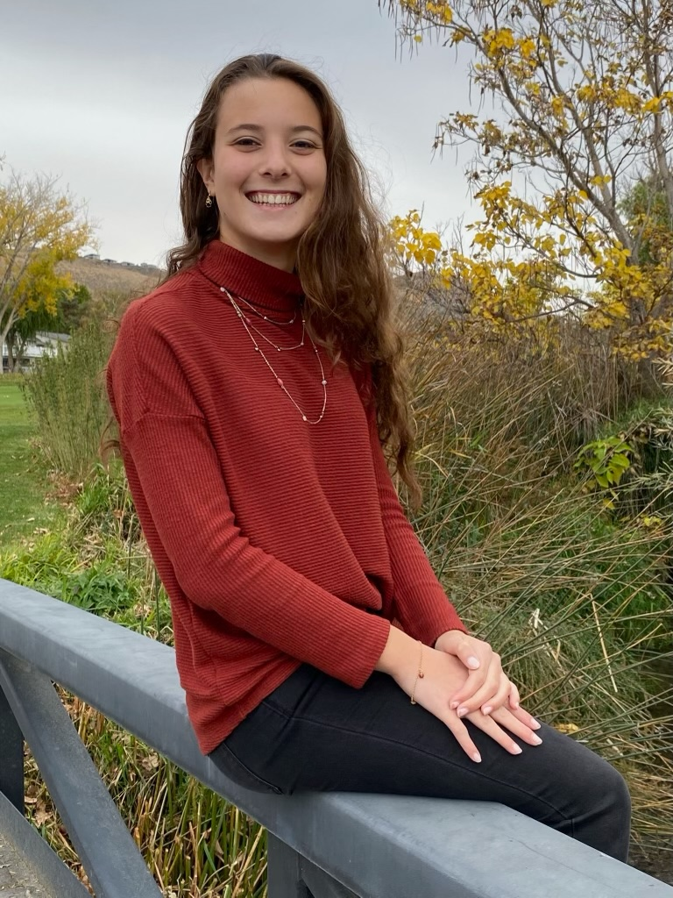
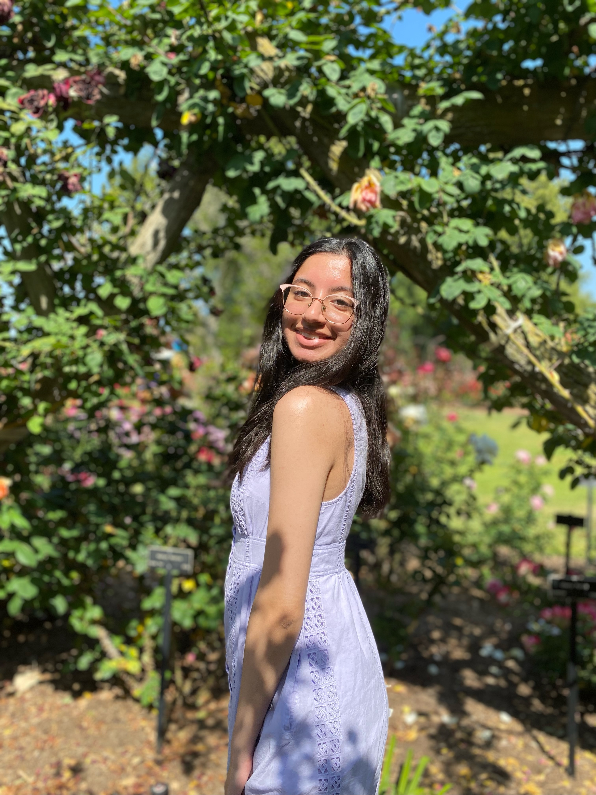
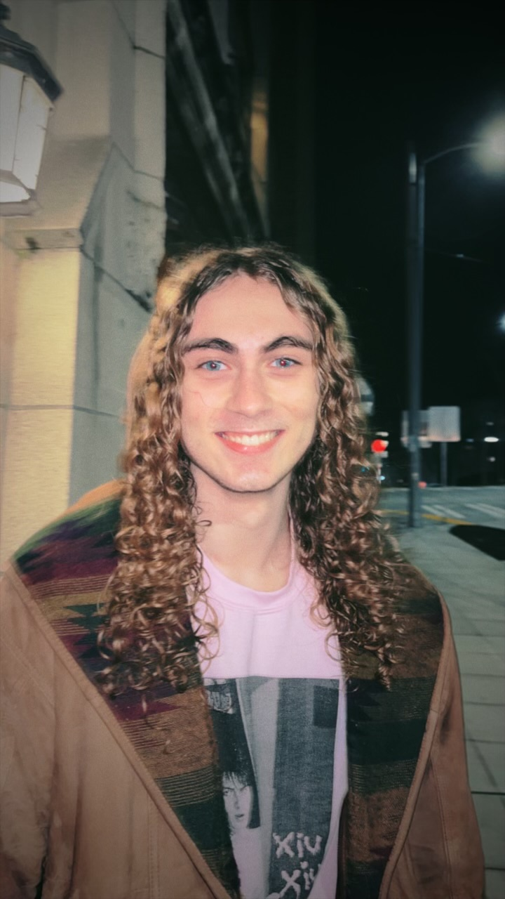
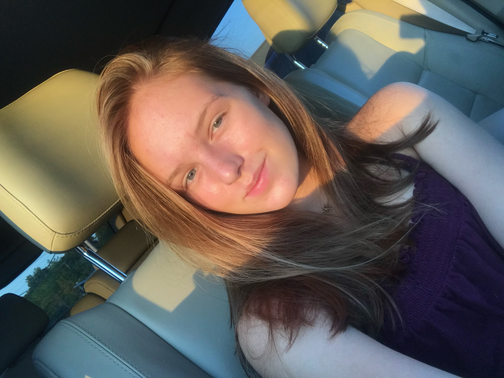

Being a Washington resident, I travelled often to Seattle.
During my visits the large population of people suffering from hunger and
homelessness always stood out to me, but I never knew how to make a difference.
That was until I heard about WashPIRG’s Hunger and Homelessness campaign.
This campaign gave me the tools I needed to make a difference and to give others
like me who didn’t know where to start, the opportunity to make a difference.
Sehrish Daud - Outreach Leader

I learned about WashPIRG through the fall kickoff event held at UW. The H&H campaign
specifically stood out to me because of its tight-knit community. Everyone
seemed to get along and was so friendly, I couldn't help but attend a few meetings.
After working with the campaign for a few months, I have learned so much and
contributed to direct change which has been so fulfilling.
Charlie Reyerson Legislative Leader

I felt the need to join WashPIRG’s H&H campaign after
realizing how difficult it is to navigate food and housing insecurity
alone. In Fall 2022, I faced unexpected financial hardship that left
me briefly homeless and scared to spend money on food.
It took months of searching to get connected with resources that drastically
improved my situation, and I felt inspired to help others
find assistance they didn’t know existed. When I heard about the H&H
campaign through a class announcement, I knew I had to go to the kickoff
meeting! Since then, I’ve had the opportunity to work with a bunch of amazing
people and fight to end the issues that put me (and so many others) in such a
difficult situation.
Ava Wisnom - Volunteer Coordinator

I joined washpirg because I believe in contributing to the communities
you’re in and that large scale change starts with making connections on an
individual level with the people around you. Being volunteer coordinator for
H&H has allowed me to build those relationships and contribute to that community
in a meaningful way.